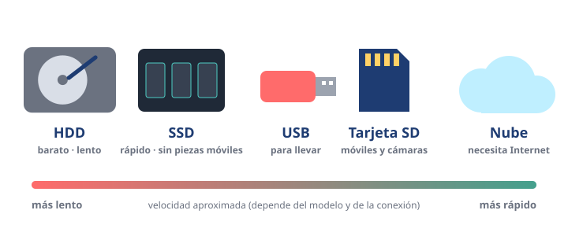

Módulo 5: Almacenamiento: dónde se guardan tus archivos
Discos duros, SSD, memorias USB, tarjetas y la nube.
Informática básica · Módulo 5 de 12
Guardar para no perder
El almacenamiento conserva tus archivos y programas aunque apagues el aparato. Hay varios tipos, cada uno con sus ventajas.

Tipos de almacenamiento más comunes.
| Tipo | Ventajas | Inconvenientes |
|---|---|---|
| Disco duro (HDD) | Mucha capacidad por poco dinero. | Lento y delicado: tiene piezas que giran. |
| SSD | Muy rápido, silencioso y resistente a golpes. | Algo más caro por GB. |
| Memoria USB / tarjeta SD | Pequeñas y fáciles de llevar. | Se pierden con facilidad; no son buenas como única copia. |
| Nube (Google Drive, OneDrive, iCloud…) | Accesible desde cualquier dispositivo; copia fuera de casa. | Necesita Internet y una cuenta bien protegida; espacio gratis limitado. |
La regla de oro: copias de seguridad
Los aparatos se rompen, se pierden y los roban. Si algo te importa, debe estar al menos en dos sitios; por ejemplo, en tu ordenador y en la nube o en un disco externo.
- 🛟 Activa la copia automática de fotos del móvil.
- 🛟 Guarda los trabajos de clase en una carpeta sincronizada con la nube.
- 🛟 Comprueba de vez en cuando que puedes abrir la copia.
🧩 ¿Qué tipo de almacenamiento hace que un ordenador arranque más rápido?
🧩 Tu trabajo final solo está en una memoria USB. ¿Qué deberías hacer?
Resumen: HDD (barato y lento), SSD (rápido), USB/SD (portátiles), nube (en Internet). Y siempre, al menos dos copias.